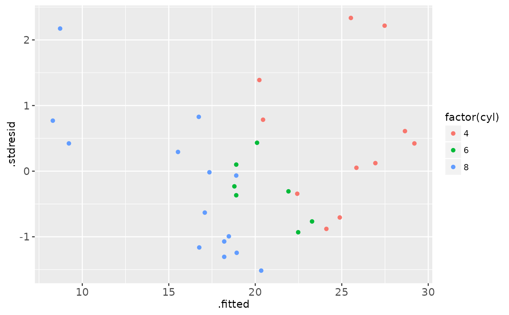
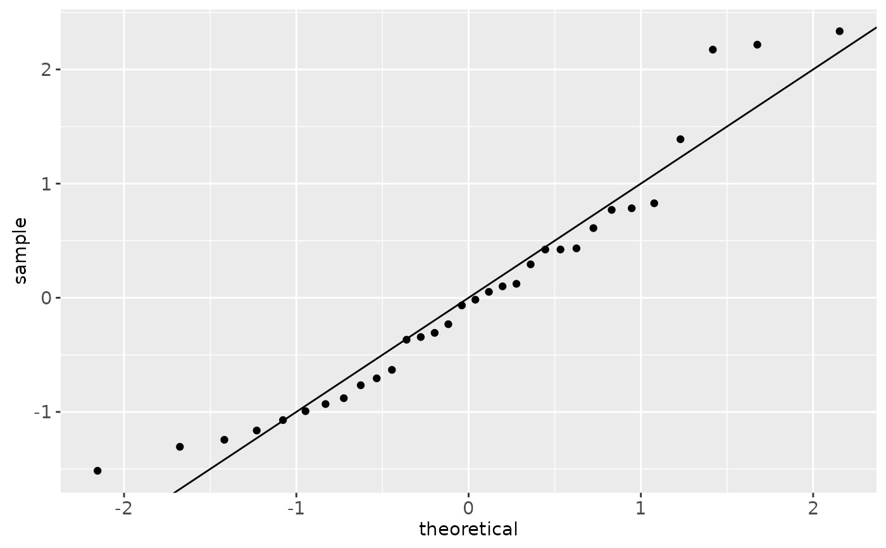
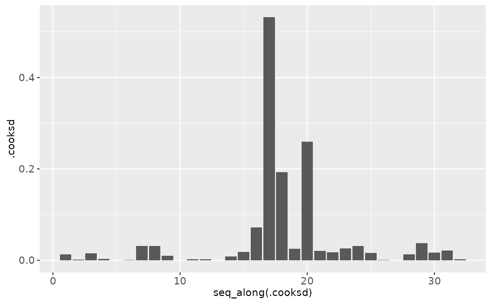
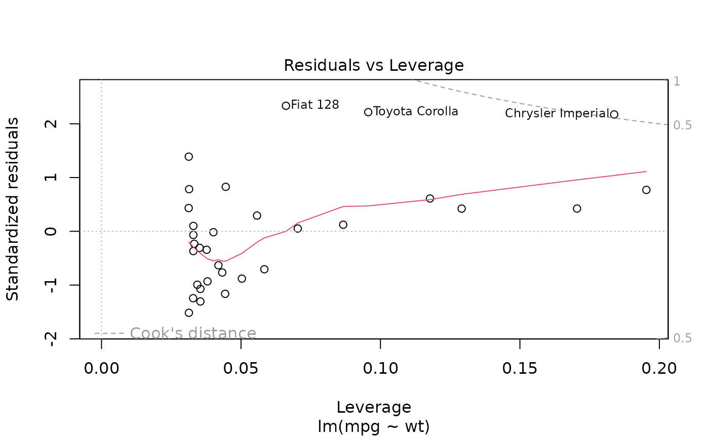
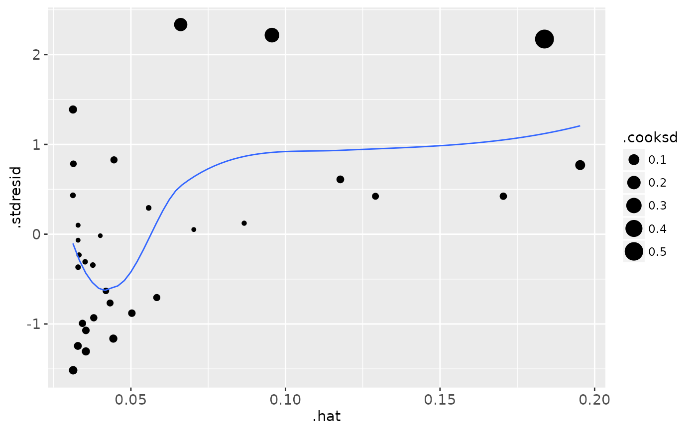
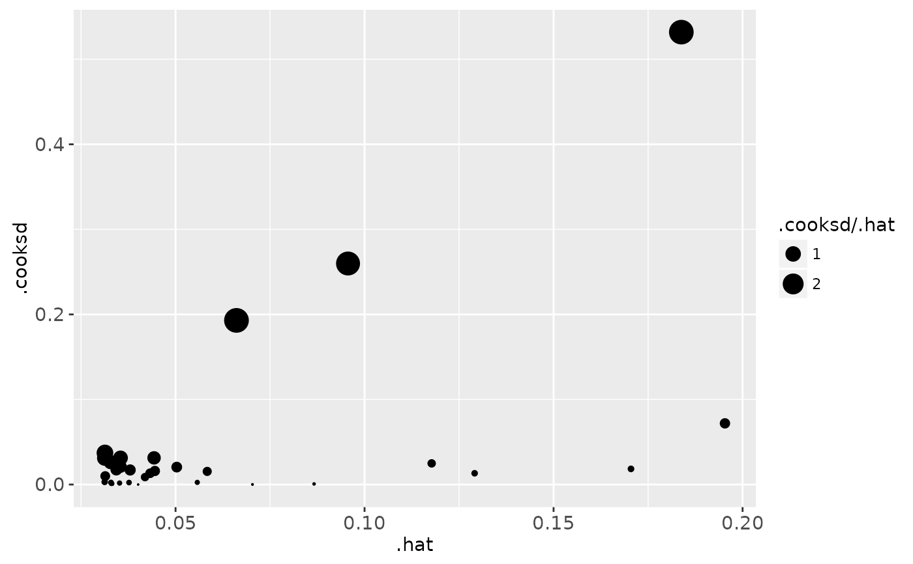
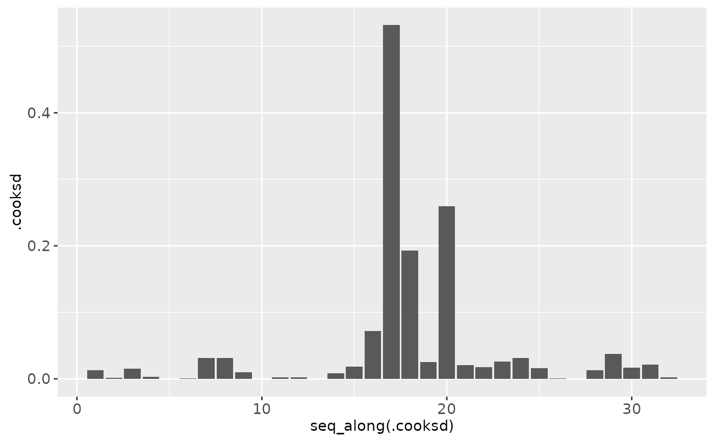
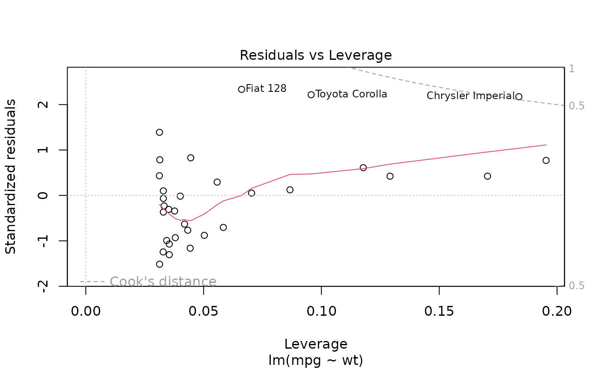
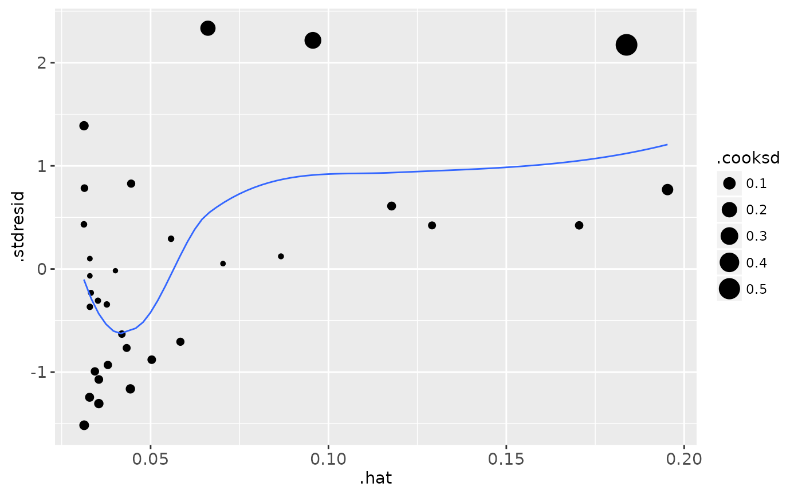
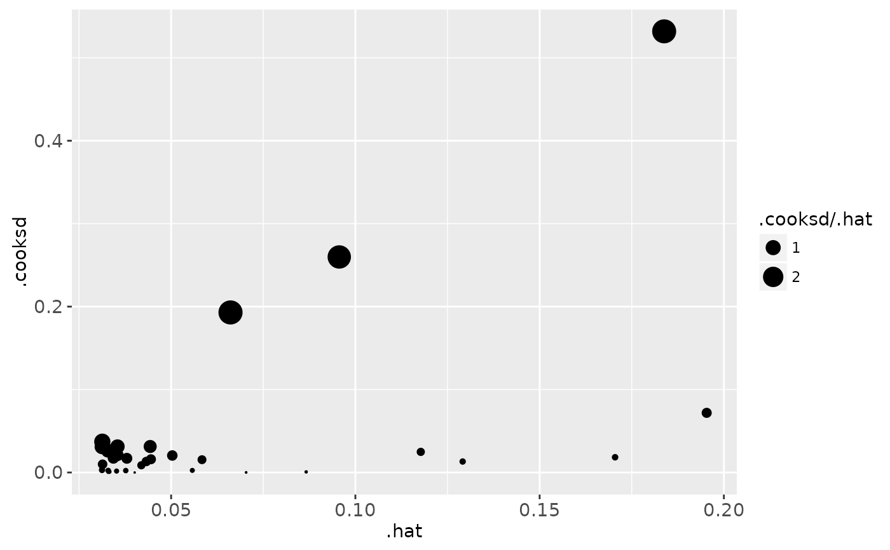

Supplement the data fitted to a linear model with model fit statistics.
Source:R/fortify-lm.r
fortify.lm.RdIf you have missing values in your model data, you may need to refit
the model with na.action = na.exclude.
Usage
# S3 method for class 'lm'
fortify(model, data = model$model, ...)Value
The original data with extra columns:
- .hat
Diagonal of the hat matrix
- .sigma
Estimate of residual standard deviation when corresponding observation is dropped from model
- .cooksd
Cooks distance,
cooks.distance- .fitted
Fitted values of model
- .resid
Residuals
- .stdresid
Standardised residuals
Examples
mod <- lm(mpg ~ wt, data = mtcars)
head(fortify(mod))
#> mpg wt .hat .sigma .cooksd .fitted
#> Mazda RX4 21.0 2.620 0.04326896 3.067494 1.327407e-02 23.28261
#> Mazda RX4 Wag 21.0 2.875 0.03519677 3.093068 1.723963e-03 21.91977
#> Datsun 710 22.8 2.320 0.05837573 3.072127 1.543937e-02 24.88595
#> Hornet 4 Drive 21.4 3.215 0.03125017 3.088268 3.020558e-03 20.10265
#> Hornet Sportabout 18.7 3.440 0.03292182 3.097722 7.599578e-05 18.90014
#> Valiant 18.1 3.460 0.03323551 3.095184 9.210650e-04 18.79325
#> .resid .stdresid
#> Mazda RX4 -2.2826106 -0.76616765
#> Mazda RX4 Wag -0.9197704 -0.30743051
#> Datsun 710 -2.0859521 -0.70575249
#> Hornet 4 Drive 1.2973499 0.43275114
#> Hornet Sportabout -0.2001440 -0.06681879
#> Valiant -0.6932545 -0.23148309
head(fortify(mod, mtcars))
#> mpg cyl disp hp drat wt qsec vs am gear carb .hat
#> Mazda RX4 21.0 6 160 110 3.90 2.620 16.46 0 1 4 4 0.04326896
#> Mazda RX4 Wag 21.0 6 160 110 3.90 2.875 17.02 0 1 4 4 0.03519677
#> Datsun 710 22.8 4 108 93 3.85 2.320 18.61 1 1 4 1 0.05837573
#> Hornet 4 Drive 21.4 6 258 110 3.08 3.215 19.44 1 0 3 1 0.03125017
#> Hornet Sportabout 18.7 8 360 175 3.15 3.440 17.02 0 0 3 2 0.03292182
#> Valiant 18.1 6 225 105 2.76 3.460 20.22 1 0 3 1 0.03323551
#> .sigma .cooksd .fitted .resid .stdresid
#> Mazda RX4 3.067494 1.327407e-02 23.28261 -2.2826106 -0.76616765
#> Mazda RX4 Wag 3.093068 1.723963e-03 21.91977 -0.9197704 -0.30743051
#> Datsun 710 3.072127 1.543937e-02 24.88595 -2.0859521 -0.70575249
#> Hornet 4 Drive 3.088268 3.020558e-03 20.10265 1.2973499 0.43275114
#> Hornet Sportabout 3.097722 7.599578e-05 18.90014 -0.2001440 -0.06681879
#> Valiant 3.095184 9.210650e-04 18.79325 -0.6932545 -0.23148309
plot(mod, which = 1)
ggplot(mod, aes(.fitted, .resid)) +
geom_point() +
geom_hline(yintercept = 0) +
geom_smooth(se = FALSE)
ggplot(mod, aes(.fitted, .stdresid)) +
geom_point() +
geom_hline(yintercept = 0) +
geom_smooth(se = FALSE)
ggplot(fortify(mod, mtcars), aes(.fitted, .stdresid)) +
geom_point(aes(colour = factor(cyl)))

ggplot(fortify(mod, mtcars), aes(mpg, .stdresid)) +
geom_point(aes(colour = factor(cyl)))
plot(mod, which = 2)
ggplot(mod) +
stat_qq(aes(sample = .stdresid)) +
geom_abline()

plot(mod, which = 3)
ggplot(mod, aes(.fitted, sqrt(abs(.stdresid)))) +
geom_point() +
geom_smooth(se = FALSE)
plot(mod, which = 4)
 ggplot(mod, aes(seq_along(.cooksd), .cooksd)) +
geom_bar(stat = "identity")

plot(mod, which = 5)

ggplot(mod, aes(.hat, .stdresid)) +
geom_vline(size = 2, colour = "white", xintercept = 0) +
geom_hline(size = 2, colour = "white", yintercept = 0) +
geom_point() + geom_smooth(se = FALSE)
ggplot(mod, aes(.hat, .stdresid)) +
geom_point(aes(size = .cooksd)) +
geom_smooth(se = FALSE, size = 0.5)

plot(mod, which = 6)
ggplot(mod, aes(.hat, .cooksd)) +
geom_vline(xintercept = 0, colour = NA) +
geom_abline(slope = seq(0, 3, by = 0.5), colour = "white") +
geom_smooth(se = FALSE) +
geom_point()
ggplot(mod, aes(.hat, .cooksd)) +
geom_point(aes(size = .cooksd / .hat)) +
scale_size_area()

ggplot(mod, aes(seq_along(.cooksd), .cooksd)) +
geom_bar(stat = "identity")

plot(mod, which = 5)

ggplot(mod, aes(.hat, .stdresid)) +
geom_vline(size = 2, colour = "white", xintercept = 0) +
geom_hline(size = 2, colour = "white", yintercept = 0) +
geom_point() + geom_smooth(se = FALSE)
ggplot(mod, aes(.hat, .stdresid)) +
geom_point(aes(size = .cooksd)) +
geom_smooth(se = FALSE, size = 0.5)

plot(mod, which = 6)
ggplot(mod, aes(.hat, .cooksd)) +
geom_vline(xintercept = 0, colour = NA) +
geom_abline(slope = seq(0, 3, by = 0.5), colour = "white") +
geom_smooth(se = FALSE) +
geom_point()
ggplot(mod, aes(.hat, .cooksd)) +
geom_point(aes(size = .cooksd / .hat)) +
scale_size_area()
